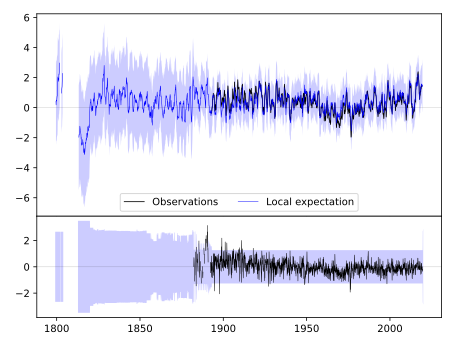
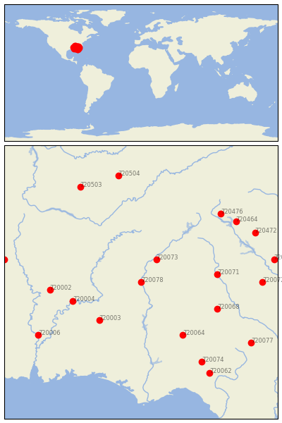
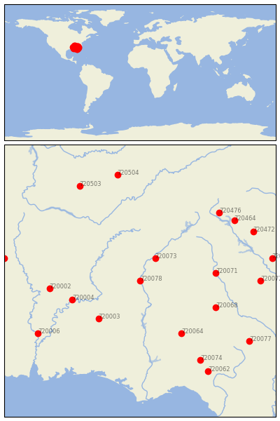

WEST POINT [USA]

 
| Neighbour | Name | Country | Distance | Lon/Lat | Years |
|---|
| 720078 | WEST POINT | USA | 0 | -85.2, 32.9 | 1882-2019 |
| 720073 | NEWNAN 5N | USA | 76 | -84.8, 33.5 | 1882-2019 |
| 720003 | HIGHLAND HOME | USA | 151 | -86.3, 31.9 | 1891-2019 |
| 720004 | SELMA | USA | 177 | -87.0, 32.4 | 1858-2019 |
| 720064 | ALBANY 3 SE | USA | 186 | -84.1, 31.5 | 1878-2019 |
| 720071 | MILLEDGEVILLE | USA | 187 | -83.2, 33.1 | 1878-2019 |
| 720068 | EASTMAN 1 W | USA | 202 | -83.2, 32.2 | 1882-2019 |
| 720002 | GREENSBORO | USA | 225 | -87.6, 32.7 | 1856-2019 |
| 720074 | QUITMAN 2 NW | USA | 278 | -83.6, 30.8 | 1882-2019 |
| 720476 | WALHALLA | USA | 278 | -83.1, 34.7 | 1884-2019 |
| 720464 | ANDERSON | USA | 291 | -82.7, 34.5 | 1884-2019 |
| 720006 | THOMASVILLE | USA | 297 | -87.9, 31.5 | 1891-2019 |
| 720072 | MILLEN 4 N | USA | 298 | -82.0, 32.9 | 1882-2019 |
| 720472 | GREENWOOD | USA | 313 | -82.2, 34.2 | 1884-2019 |
| 720503 | LEWISBURG EXP STN | USA | 314 | -86.8, 35.4 | 1888-2019 |
| 720504 | MC MINNVILLE | USA | 316 | -85.8, 35.7 | 1872-2019 |
| 720062 | MADISON | USA | 316 | -83.4, 30.5 | 1889-2019 |
| 720077 | WAYCROSS 4 NE | USA | 325 | -82.3, 31.3 | 1882-2019 |
| 720463 | AIKEN 5SE | USA | 332 | -81.7, 33.5 | 1893-2019 |
| 720284 | STATE UNIV | USA | 341 | -88.8, 33.5 | 1886-2019 |